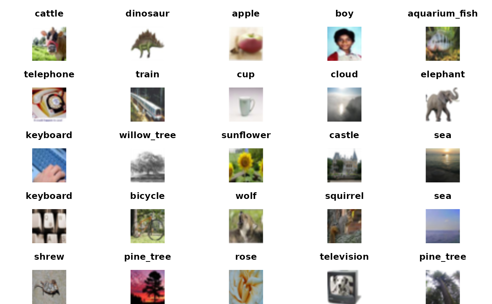
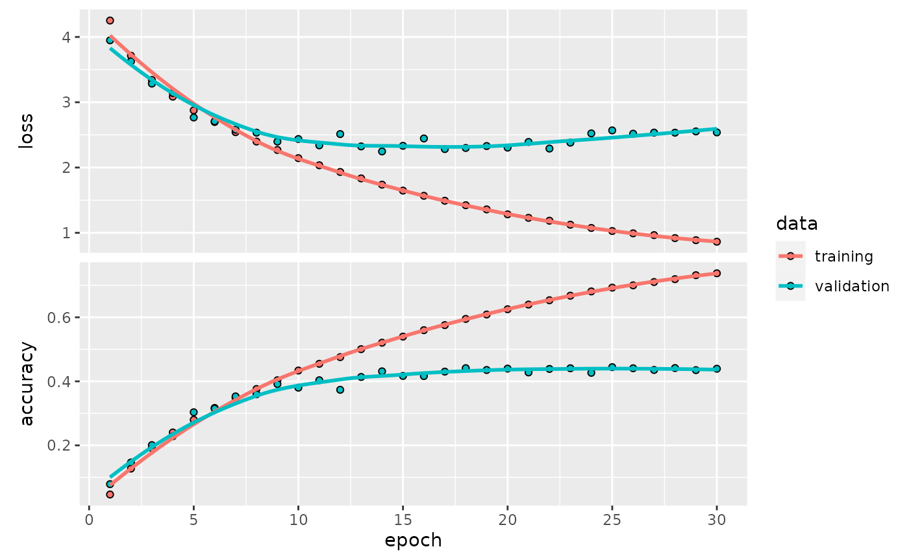
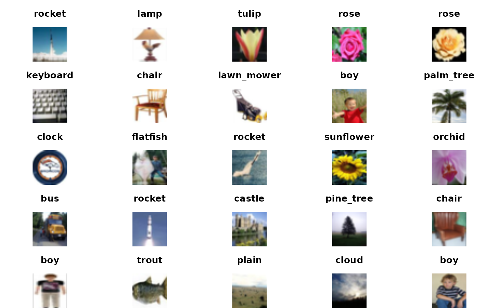

vignettes/deep.Rmd
deep.RmdThe “ISLR book” by James, Witten, Hastie and Tibshirani is available online. There are useful discussions of deep learning and its applications in Chapter 10. In this little vignette we simplify a little some of the computing related to the lab on convolutional neural networks bit of the computing for the lab 10.9.3 in the second edition.
The following code will acquire a representation of 60000 images that have been classified into 100 categories.
library(keras)
cifar100 <- dataset_cifar100()
names(cifar100)## [1] "train" "test"
names(cifar100$train)## [1] "x" "y"
length(cifar100$train$y)## [1] 50000
length(cifar100$test$y)## [1] 10000The representations of the images are 32 x 32 x 3 – the plane is 32 x 32 and at each point the red, green and blue intensities are recorded in values from 0 to 255.
The labeling of the images in the cifar100 is limited to numeric coding from 0 to 99. To decode we need some metadata about the resource, and this can be obtained conveniently from huggingface.
library(jsonlite)
cifmeta = fromJSON(system.file("extdata", "cif.json", package="littleDeep"))
labs = cifmeta[[1]]$features$fine_label$names
head(labs)## [1] "apple" "aquarium_fish" "baby" "bear"
## [5] "beaver" "bed"Here is a little code that allows us to see a few of the images and their associated labels.
mypl = function(x, use="train", ...)
plot(as.raster(cifar100[[use]][["x"]][x,,,], max=255), ...)
labinds = cifar100[[1]][[2]]+1
par(mfrow=c(5,5), mar=c(0,0,3,0))
for (i in 1:25) { mypl(i); title(labs[labinds[i]]) }
We fit the model according to the code in the appendix. We can restore it from disk as follows:
model = load_model_hdf5(system.file("extdata", "cifar100.keras.h5", package="littleDeep"))
model## Model: "sequential"
## ________________________________________________________________________________
## Layer (type) Output Shape Param #
## ================================================================================
## conv2d_3 (Conv2D) (None, 32, 32, 32) 896
## max_pooling2d_3 (MaxPooling2D) (None, 16, 16, 32) 0
## conv2d_2 (Conv2D) (None, 16, 16, 64) 18496
## max_pooling2d_2 (MaxPooling2D) (None, 8, 8, 64) 0
## conv2d_1 (Conv2D) (None, 8, 8, 128) 73856
## max_pooling2d_1 (MaxPooling2D) (None, 4, 4, 128) 0
## conv2d (Conv2D) (None, 4, 4, 256) 295168
## max_pooling2d (MaxPooling2D) (None, 2, 2, 256) 0
## flatten (Flatten) (None, 1024) 0
## dropout (Dropout) (None, 1024) 0
## dense_1 (Dense) (None, 512) 524800
## dense (Dense) (None, 100) 51300
## ================================================================================
## Total params: 964,516
## Trainable params: 964,516
## Non-trainable params: 0
## ________________________________________________________________________________The history of fitting was recorded:
data(cifar100_history)
cifar100_history##
## Final epoch (plot to see history):
## loss: 0.8639
## accuracy: 0.7374
## val_loss: 2.538
## val_accuracy: 0.4393
plot(cifar100_history)
ISLR had some references to predict_class and accuracy that are now defunct.
accuracy <- function(pred, truth)
mean(drop(as.numeric(pred)) == drop(truth))
testPreds <- model %>% predict(cifar100$test$x) %>% k_argmax()
testPreds %>% accuracy(cifar100$test$y)## [1] 0.1489
kp <- which(as.numeric(testPreds) == cifar100$test$y)[1:25]It is peculiar that the external validation accuracy is so much lower than that reported in the history. Let’s look at some of the ones that were correctly predicted.
par(mfrow=c(5,5), mar=c(0,0,3,0))
for (i in kp) {mypl(i, use="test"); title(labs[cifar100$test$y+1][i])}
The images with correctly predicted classes seem properly identified.
Exercise: Present 4 incorrectly labeled images. How “far off” are the labels?
Exercise: Which image types in the test set are most frequently correctly labeled?
The following code specifies the model, and is part of the run_cifar100 function body in littleDeep. The code is taken almost verbatim from ISLR, with variables nEpochs, batchSize and valSplit configurable by the user of run_cifar100.
model <- keras_model_sequential() %>%
layer_conv_2d(
filters = 32, kernel_size = c(3, 3),
padding = "same", activation = "relu",
input_shape = c(32, 32, 3)
) %>%
layer_max_pooling_2d(pool_size = c(2, 2)) %>%
layer_conv_2d(
filters = 64, kernel_size = c(3, 3),
padding = "same", activation = "relu"
) %>%
layer_max_pooling_2d(pool_size = c(2, 2)) %>%
layer_conv_2d(
filters = 128, kernel_size = c(3, 3),
padding = "same", activation = "relu"
) %>%
layer_max_pooling_2d(pool_size = c(2, 2)) %>%
layer_conv_2d(
filters = 256, kernel_size = c(3, 3),
padding = "same", activation = "relu"
) %>%
layer_max_pooling_2d(pool_size = c(2, 2)) %>%
layer_flatten() %>%
layer_dropout(rate = 0.5) %>%
layer_dense(units = 512, activation = "relu") %>%
layer_dense(units = 100, activation = "softmax")
model %>% compile ( loss = "categorical_crossentropy" ,
optimizer = optimizer_rmsprop () , metrics = c ( "accuracy" ) )
history <- model %>% fit ( cifar100$train$x/255 , to_categorical(cifar100$train$y,100) ,
epochs = nEpochs ,
batch_size = batchSize , validation_split = valSplit)